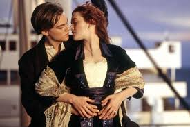
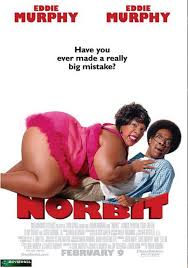
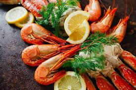
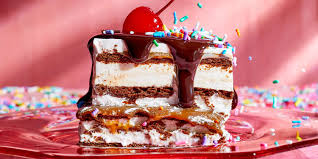
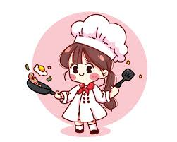
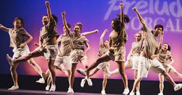
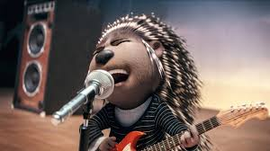

Going out is something I really enjoy. I love exploring new places and spending time outdoors.It makes me feel fresh and alive.
One of my favorite places to go is the beach. I love the way the sand feels between my toes, and the sound of the waves is so calming.
I could sit on the shore for hours, just watching the ocean. The beach is where I go to relax and forget about everything else.
Another place I enjoy visiting is the mountains. Hiking up a mountain, reach the top and see the beautiful view.
The fresh air and the sounds of
nature make me feel at peace. Sometimes, I also like to go to the mall. Walking around, looking at the
shops, and maybe buying something which makes me happy. It’s also a good way to spend time with friends, talking and laughing as we walk around.
There are so many types of movies, and I enjoy watching them all.
I really like horror movies. They are scary, but that's what makes them fun.
The suspense and the thrill keep me on the edge of my seat. Love stories are another type of movie I enjoy. They are sweet and make me feel
warm inside.
Watching two people fall in love and face challenges together is always touching. It makes me believe in love and happy endings.
Romance movies are similar to love stories, but they often have more drama.
I enjoy the emotions and the passion in these movies.
They can be sad or happy, but they always leave me with something to think about. And then there's comedy. Comedy movies make my day
laughter and fun. These movies never fail to bring a smile to my face.


Eating is not just about filling my stomach, it's something I truly enjoy. Trying different foods is
an adventure for my taste buds.
Seafood is one of my favorite types of food. Whether it's shrimp, or crab,
I can't get enough of it.
Desserts are something I can never resist. Cakes, ice cream, chocolates, I love it.



Cooking is another hobby I enjoy. Where I can experiment with different ingredients and flavors.
I love trying out new recipes and seeing how they turn out. Cooking helps me relax.
The best part is when the food is ready, and I can taste the result of my hard work.
I also enjoy cooking for others. Seeing my family or friends enjoy the food I've made gives me a lot of satisfaction.
It's a way to show love and care. Cooking for someone is like giving them a piece of my heart on a plate.

Dancing is a hobby that makes me feel alive. It's a way to express myself through movement and have fun at the same time.
Just in my room, dancing always lifts my spirits.
Dancing is also a great form of exercise. It keeps me fit and healthy without
feeling like a workout. When I dance, I’m having so much fun that I forget I’m even exercising!
Even if I’m not the best dancer,
it doesn’t matter. What’s important is that I enjoy it and feel good while doing it. Dancing is about feeling free and happy,
and that’s why I love it so much.

Singing is something I enjoy, even though my voice might not be perfect. It’s a way to express my emotions and have fun.
Singing along to my favorite songs always makes me feel better, no matter what kind of day I’m having.
Music has a way
of touching the heart, and singing is my way of connecting with it. Whether it’s a happy song that makes me smile or a sad
song that brings out my emotions, singing helps me feel the music deeply.
Even though I know I’m not a great singer,
I don’t let that stop me. Singing is about having fun and feeling good, and that’s all that matters. It’s a hobby that brings joy to my heart.

Music is a big part of my life. It’s there when I’m happy, sad, or anything in between.
Listening to music helps me relax, feel inspired, and sometimes, it even helps me focus.
I enjoy different types of music depending on my mood.